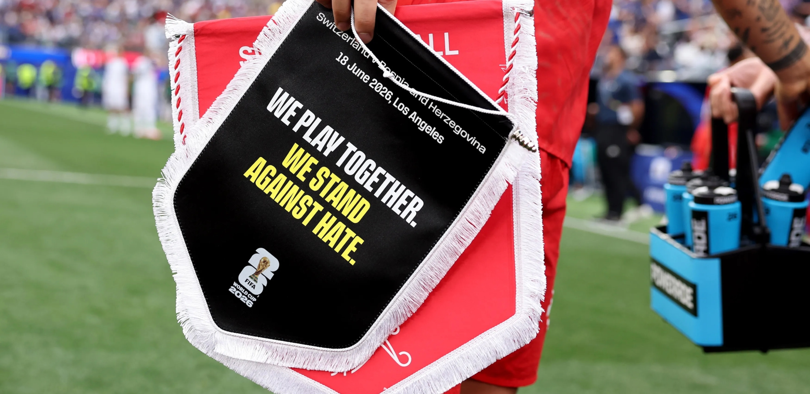
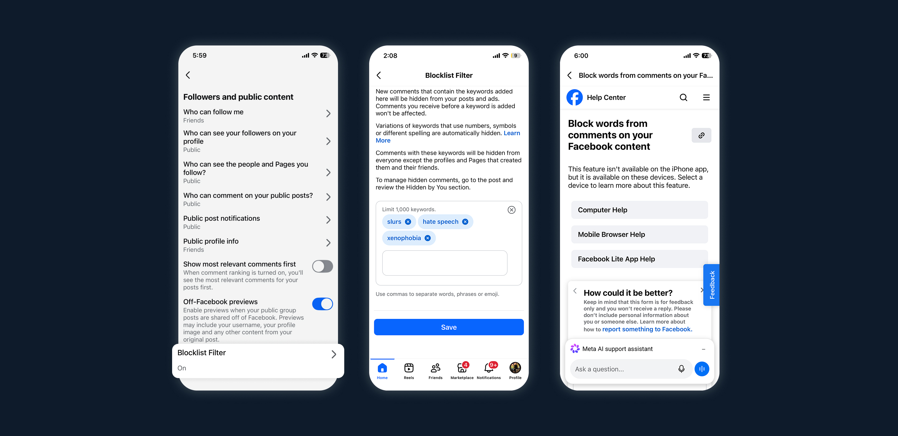
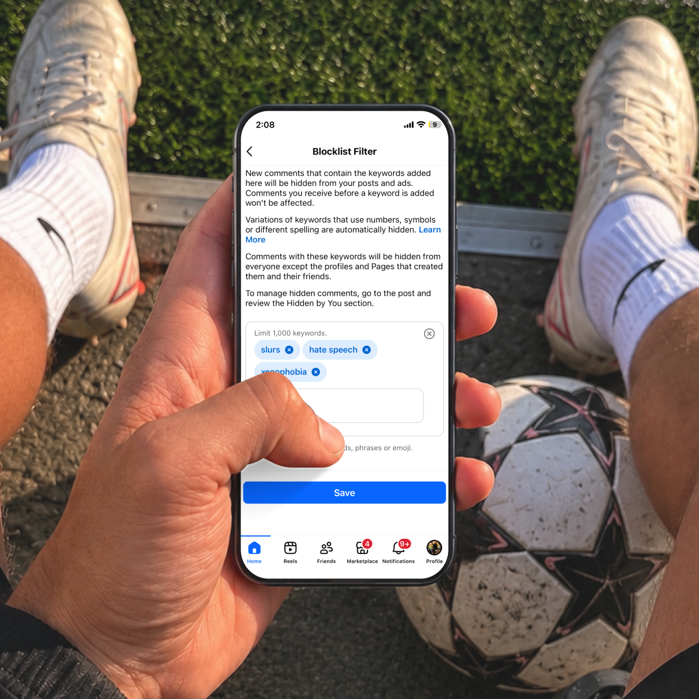
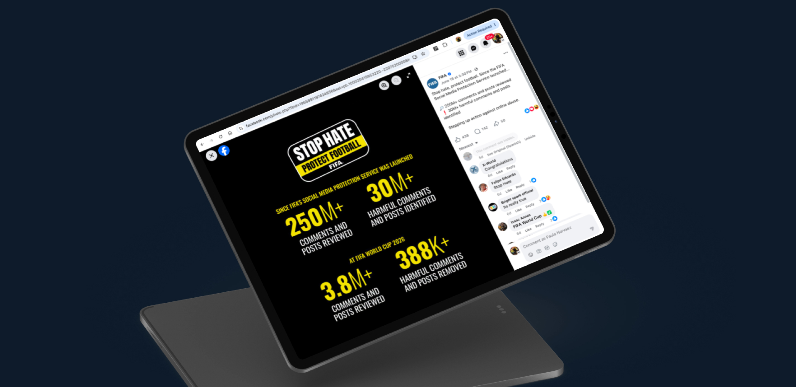

When Instagram's protections activated for 1,300 athletes, Facebook became the unprotected surface.

Instagram had already switched on protections for 1,300 World Cup athletes. On Facebook, the 182 highest-profile players, biggest followings, most media coverage, greatest reputational risk, had nothing. The surface where abuse was most visible was the one left open.
I designed a default-on Hidden Words filter for those athletes: a curated blocklist that hides abusive comments and messages automatically. No setup, no opt-in, nothing to configure, but every control stayed in their hands. They could review what was hidden, edit the list, or turn it off entirely. Automatic protection, zero setup required, full control preserved.


A player can walk onto the field knowing the filter is already working. If they ever want to look under the hood, the controls are right where they'd expect them.
In the first week of the World Cup alone, the system reviewed millions of posts and removed hundreds of thousands of toxic messages, before the players ever saw them.

The hardest safety problems aren't always about building more controls. Here, the win was deciding who shouldn't have to think about it at all, and protecting them without ever taking the choice away.